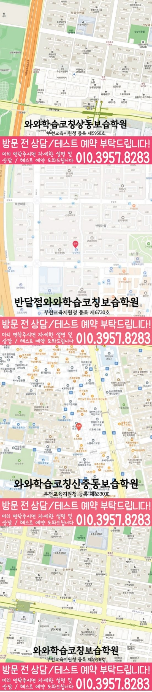

와와학습코칭센터 상동점
경기 부천시 원미구 송내대로265번길 67 월드컵타운 305호 와와학습코칭센터
GRADE 6 MATH LOCAL GUIDE
와와학습코칭센터 상동점의 위치와 과목별 가능 학년을 확인하고, 초6 수학 상담에 필요한 학교·학습 자료를 준비해 보세요.
와와학습코칭센터 상동점의 수학 가능 학년 안내: 초6. 현재 수업 시간·반 편성·정원은 상담에서 확인해 주세요.
경기 부천시 원미구 송내대로265번길 67 월드컵타운 305호 와와학습코칭센터
현재 반 편성과 시간표는 상담에서 확인
부천교육지원청 등록 제5950호
통합 상담 전화 010-6839-8283 · 문의할 때 와와학습코칭센터 상동점과 학생의 학년을 말씀해 주세요.
교습비 자료의 과목·수업 시간·횟수와 별도 비용을 상담 내용과 함께 확인해 주세요.
아래는 가정에서 활용하는 일반 학습 점검 예시입니다. 현재 학교·교재에서 배우는 내용에 해당할 때 활용하고, 아직 배우지 않은 내용은 현재 진도에 맞춰 확인해 주세요. 학생의 학습 수준과 센터의 실제 수업 구성은 상담에서 확인할 수 있습니다.
전체 또는 기준이 되는 양을 무엇으로 잡았나요?
직접 확인할 예 12명 중 3명은 3/12 = 1/4, 즉 25%입니다. 3명과 12명 중 어느 수를 기준으로 나누었는지 말해 보세요.
공식대로 계산한 뒤 답이 나타내는 묶음 수를 설명할 수 있나요?
직접 확인할 예 3/4L를 1/2L씩 나누면 3/2묶음입니다. 3/4 ÷ 1/2 = 3/2를 수직선이나 그림으로 확인해 보세요.
제목, 단위, 눈금 간격을 읽은 뒤 값을 비교했나요?
직접 확인할 예 표에 월요일 20명, 화요일 30명이 적혀 있다면 차이는 10명입니다. 그래프 눈금이 5명씩인지 10명씩인지에 따라 읽는 위치가 달라짐을 확인해 보세요.
틀린 문제에서 놓친 조건, 처음 막힌 계산 줄, 답을 확인한 방법을 적어 보세요. 해설을 덮고 다시 풀 때 같은 줄에서 멈추는지 확인하고, 해결하지 못한 부분은 질문으로 남겨 주세요.
교재 이름·쪽수와 혼자 해결한 부분을 함께 표시하면 상담에서 현재 학습 상태를 설명하기 쉽습니다.
제공 자료의 초등학교 참고 목록: 부인초등학교, 상도초등학교, 상동초등학교, 상미초등학교, 상원초등학교, 상인초등학교, 상일초등학교, 석천초등학교, 송내초등학교.
학교 목록은 지역 참고 자료입니다. 해당 학교별 반 운영이나 시험 대비 수업을 확인한 정보는 아닙니다. 학생이 사용하는 교재, 실제 과목명·진도, 시험 범위 안내와 최근 오답을 준비해 주세요.
계산 과정을 어디까지 설명해야 하는지, 오답의 이유를 어떻게 확인하는지, 다시 풀 문제와 결과를 어떻게 기록하는지 질문해 보세요.
위의 센터 정보에 적힌 가능 학년을 확인하고 현재 시간표·반 편성·과목 범위를 문의해 주세요. 이 질문과 학습 예시는 센터의 확정된 수업 방식이나 제공 서비스를 뜻하지 않습니다.
와와학습코칭센터 상동점의 수학 가능 학년 안내: 초6. 현재 수업 시간·반 편성·정원은 상담에서 확인해 주세요.
학교 참고 목록은 부인초등학교, 상도초등학교, 상동초등학교, 상미초등학교, 상원초등학교, 상인초등학교, 상일초등학교, 석천초등학교, 송내초등학교입니다. 학교별 전용 반 개설 여부는 별도로 확인해 주세요. 재학 학교와 학년을 알려 주고 학교 학습지, 단원평가 자료와 사용하는 교재를 바탕으로 상담할 수 있습니다.
다음 계획을 비교하는 초6 수학 상담에서는 맞고 틀린 결과보다 학생이 받은 설명과 다음 행동이 분명한지 확인하세요. 학습 기록에 ‘주말에 누적 오답 두 문제를 골라 풀이 근거까지 다시 적어 보기’의 실행 여부와 다음 확인일을 함께 남기면 가정에서도 흐름을 살펴볼 수 있습니다.
센터의 교습비 자료와 상담에서 과목·횟수·수업 시간을 대조해 주세요. 교재비 등 별도 비용, 결석 시 보강 기준과 과제 피드백 방식도 함께 확인하면 좋습니다.
CONSULTATION SCENARIO
아래 두 장면은 초6 수학 상담 전에 준비할 자료와 질문을 정리한 점검 예시입니다.
가정 상담 장면: 부천 상동의 한 학부모가 최근 자료 가운데 조건 해석과 문제 해결에서 막힌 문제와 비와 비율 관련 학습 기록을 나눠 가져오고, 초6 수학 상담에서 제안받을 첫 주 확인 항목과 다음 점검일을 질문하는 상황을 가정할 수 있습니다. 이 초6 수학 상담 장면은 실제 이용 후기나 특정 학생의 성과가 아니며, 상담 준비용 가상 예시입니다. 부천 상동에서 초6 수학을 공부하는 학생의 학습 결과는 출발점과 실천 정도에 따라 달라질 수 있습니다.
비교 상담 장면: 부천 상동에서 초6 수학을 공부하는 학생의 학교 일정과 통학 가능 시간을 적어 두고 와와학습코칭센터 상동점에서 누적 오답 재확인 관련 기록을 확인하는 방식, 과제 조절 기준, 학부모 공유 항목을 묻는 장면을 생각해 볼 수 있습니다. 이 초6 수학 상담 장면에서 비교할 항목은 학생의 실제 자료와 가능한 일정에 맞춰 조정해야 합니다.


와와학습코칭센터 상동점의 위치와 부천 상동 생활권을 기준으로 초6 수학 상담 정보를 확인합니다. 방문 전 실제 이동 동선과 상담 가능 시간을 함께 확인해 주세요.